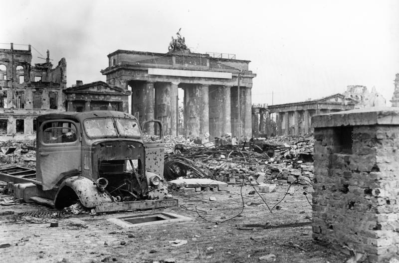
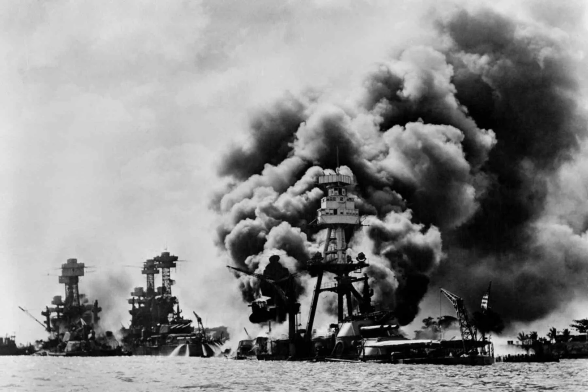

Galería - Segunda Guerra Mundial
Imágenes históricas del conflicto más devastador de la historia (1939-1945)

Desembarco de Normandía
El Día D (6 de junio de 1944) marcó el principio del fin para la Alemania nazi.

Batalla de Stalingrado
Uno de los enfrentamientos más sangrientos de la historia.
Hiroshima después de la bomba
El primer uso de armas nucleares en un conflicto bélico.

Conferencia de Yalta
Churchill, Roosevelt y Stalin deciden el futuro de la posguerra (1945).

Batalla de Berlín
El asalto final al corazón del Tercer Reich (abril-mayo 1945).

Pearl Harbor
El ataque sorpresa que llevó a EE.UU. a entrar en la guerra (7 diciembre 1941).